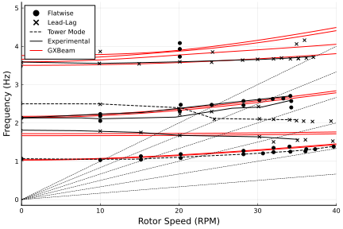
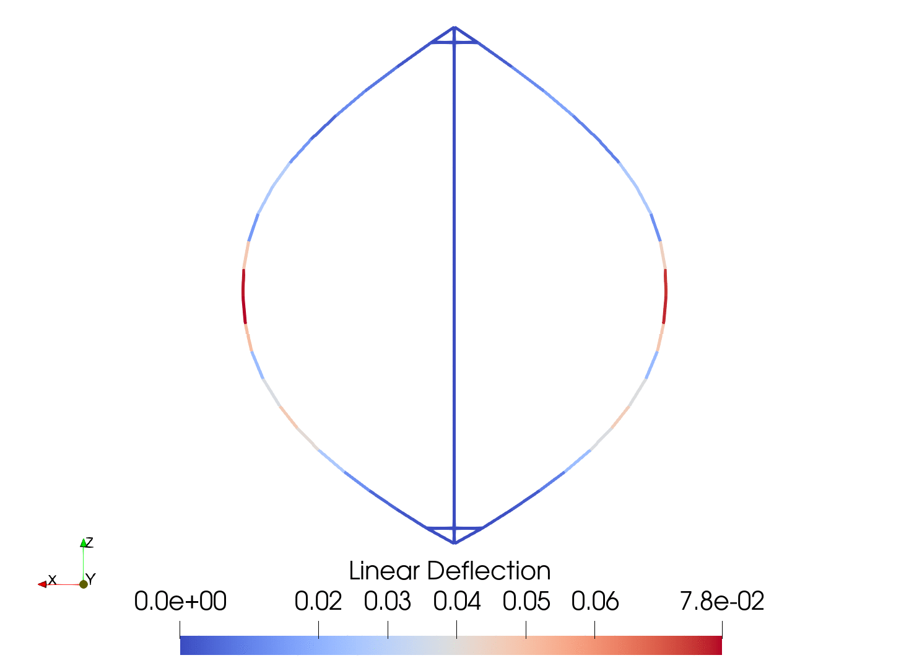

Sandia 34-Meter Vertical Axis Wind Turbine
In this example, we examine the stability characteristics of the Sandia 34-Meter Vertical Axis Wind Turbine (VAWT). Geometry for this VAWT is described in SAND-91-2228 and shown in the figure. Sectional properties for this VAWT are derived from properties listed in SAND-88-1807
The original authors of this example requested that the following citation accompany it.
Moore, K. and Ennis, B., “Aeroelastic Validation of the Offshore Wind Energy Simulator for Vertical-Axis Wind Turbines”, forthcoming 2022

This example is also available as a Jupyter notebook: vertical-axis-wind-turbine.ipynb.
using GXBeam, LinearAlgebra, FLOWMath
# --- Tower Definition --- #
tower_height = 41.9
tower_stiffness = Diagonal([8.4404e9, 2.7053e9, 2.7053e9, 7.0428e9, 9.4072e9, 9.4072e9])
tower_mass = Diagonal([330.755, 330.755, 330.755, 737.282, 368.641, 368.641])
# --- Blade Definition --- #
# geometry
blade_xyz = [
0.0 0.0 0.0;
2.26837 0.0 1.257;
3.63183 0.0 2.095;
6.76113 0.0 4.19;
9.55882 0.0 6.285;
11.8976 0.0 8.38;
13.7306 0.0 10.475;
15.1409 0.0 12.57;
16.1228 0.0 14.665;
16.7334 0.0 16.76;
17.0133 0.0 18.855;
17.0987 0.0 20.95;
16.9615 0.0 23.045;
16.5139 0.0 25.14;
15.7435 0.0 27.235;
14.5458 0.0 29.33;
12.9287 0.0 31.425;
10.8901 0.0 33.52;
8.547 0.0 35.615;
5.93739 0.0 37.71;
3.05842 0.0 39.805;
1.87486 0.0 40.643;
0.0 0.0 41.9
]
# section boundaries (z-coordinate)
blade_transition = [0.0, 5.8, 11.1, 29.0, 34.7, 41.9]
# root section properties
blade_stiffness1 = [
3.74563e9 0.0 0.0 0.0 0.0 1.14382e8;
0.0 1.20052e9 0.0 0.0 0.0 0.0;
0.0 0.0 1.20052e9 0.0 0.0 0.0;
0.0 0.0 0.0 1.87992e7 0.0 0.0;
0.0 0.0 0.0 0.0 2.24336e7 0.0;
1.14382e8 0.0 0.0 0.0 0.0 4.09242e8;
]
blade_mass1 = [
146.781 0.0 0.0 0.0 28.7783 0.0;
0.0 146.781 0.0 -28.7783 0.0 0.0;
0.0 0.0 146.781 0.0 0.0 0.0;
0.0 -28.7783 0.0 16.7793 0.0 0.0;
28.7783 0.0 0.0 0.0 0.879112 -0.0;
0.0 0.0 0.0 0.0 -0.0 15.9002;
]
# transition section properties
blade_stiffness2 = [
2.22783e9 0.0 0.0 0.0 0.0 4.20422e7;
0.0 7.14048e8 0.0 0.0 0.0 0.0;
0.0 0.0 7.14048e8 0.0 0.0 0.0;
0.0 0.0 0.0 6.55493e6 0.0 0.0;
0.0 0.0 0.0 0.0 7.35548e6 0.0;
4.20422e7 0.0 0.0 0.0 0.0 1.84227e8;
]
blade_mass2 = [
87.3025 0.0 0.0 0.0 16.7316 0.0;
0.0 87.3025 0.0 -16.7316 0.0 0.0;
0.0 0.0 87.3025 -0.0 0.0 0.0;
0.0 -16.7316 -0.0 7.47649 0.0 0.0;
16.7316 0.0 0.0 0.0 0.288241 -0.0;
0.0 0.0 0.0 0.0 -0.0 7.18825;
]
# center section properties
blade_stiffness3 = [
1.76888e9 0.0 0.0 0.0 0.0 2.34071e7;
0.0 5.66947e8 0.0 0.0 0.0 0.0;
0.0 0.0 5.66947e8 0.0 0.0 0.0;
0.0 0.0 0.0 4.00804e6 0.0 0.0;
0.0 0.0 0.0 0.0 4.34302e6 0.0;
2.34071e7 0.0 0.0 0.0 0.0 1.09341e8;
]
blade_mass3 = [
69.3173 0.0 0.0 0.0 11.5831 0.0;
0.0 69.3173 0.0 -11.5831 0.0 0.0;
0.0 0.0 69.3173 -0.0 0.0 0.0;
0.0 -11.5831 -0.0 4.44282 0.0 0.0;
11.5831 0.0 0.0 0.0 0.170191 -0.0;
0.0 0.0 0.0 0.0 -0.0 4.27263;
]
# --- Strut Definition --- #
strut_locations = [1.257, 40.643]
strut_stiffness = blade_stiffness1
strut_mass = blade_mass1
# --- Define Assembly --- #
# Tower
# number of tower sections
nt = 22
# tower points
x = zeros(nt+1)
y = zeros(nt+1)
z = vcat(0, range(strut_locations[1], strut_locations[2]; length=nt-1), tower_height)
pt_t = [[x[i],y[i],z[i]] for i = 1:nt+1]
# tower frame of reference
frame_t = fill([0 0 1; 0 1 0; -1 0 0], nt)
# tower stiffness
stiff_t = fill(tower_stiffness, nt)
# tower mass
mass_t = fill(tower_mass, nt)
# Blades
# number of blade sections
nbr = 4 # root
nbt = 3 # transition
nbc = 8 # center
nb = 2*nbr + 2*nbt + nbc # total number of blade sections
# interpolation parameter coordinates
new_z = vcat(0.0,
range(strut_locations[1], 5.8, length=nbr)[1:end-1],
range(5.8, 11.1, length=nbt+1)[1:end-1],
range(11.1, 29.0, length=nbc+1)[1:end-1],
range(29.0, 34.7, length=nbt+1)[1:end-1],
range(34.7, strut_locations[2], length=nbr),
tower_height)
# blade points
x = FLOWMath.akima(blade_xyz[:,3], blade_xyz[:,1], new_z)
y = zero(new_z)
z = new_z
pt_bl = [[-x[i],y[i],z[i]] for i = 1:nb+1] # left blade
pt_br = [[x[i],y[i],z[i]] for i = 1:nb+1] # right blade
# left blade frame of reference
frame_bl = Vector{Matrix{Float64}}(undef, nb)
for i = 1:nb
r = pt_bl[i+1] - pt_bl[i]
n = norm(r)
s = r[3]/n
c = r[1]/n
frame_bl[i] = [c 0 -s; 0 1 0; s 0 c]
end
# right blade frame of reference
frame_br = Vector{Matrix{Float64}}(undef, nb)
for i = 1:nb
r = pt_br[i+1] - pt_br[i]
n = norm(r)
s = r[3]/n
c = r[1]/n
frame_br[i] = [c 0 -s; 0 1 0; s 0 c]
end
# blade stiffness
stiff_b = vcat(
fill(blade_stiffness1, nbr),
fill(blade_stiffness2, nbt),
fill(blade_stiffness3, nbc),
fill(blade_stiffness2, nbt),
fill(blade_stiffness1, nbr)
)
# blade mass
mass_b = vcat(
fill(blade_mass1, nbr),
fill(blade_mass2, nbt),
fill(blade_mass3, nbc),
fill(blade_mass2, nbt),
fill(blade_mass1, nbr)
)
# Struts
# number of strut sections per strut
ns = 3
# lower left strut points
x = range(0.0, pt_bl[2][1]; length=ns+1)
y = zeros(ns+1)
z = fill(strut_locations[1], ns+1)
pt_s1 = [[x[i],y[i],z[i]] for i = 1:ns+1]
# lower right strut points
x = range(0.0, pt_br[2][1]; length=ns+1)
y = zeros(ns+1)
z = fill(strut_locations[1], ns+1)
pt_s2 = [[x[i],y[i],z[i]] for i = 1:ns+1]
# upper left strut points
x = range(0.0, pt_bl[end-1][1]; length=ns+1)
y = zeros(ns+1)
z = fill(strut_locations[2], ns+1)
pt_s3 = [[x[i],y[i],z[i]] for i = 1:ns+1]
# upper right strut points
x = range(0.0, pt_br[end-1][1]; length=ns+1)
y = zeros(ns+1)
z = fill(strut_locations[2], ns+1)
pt_s4 = [[x[i],y[i],z[i]] for i = 1:ns+1]
# strut frame of reference
frame_s = fill([1 0 0; 0 1 0; 0 0 1], ns)
# strut stiffness
stiff_s = fill(strut_stiffness, ns)
# strut mass
mass_s = fill(strut_mass, ns)
# Combine Tower, Blades, and Struts
# combine points
points = vcat(pt_t, pt_bl, pt_br, pt_s1, pt_s2, pt_s3, pt_s4)
# define element connectivity
istart = cumsum([1, nt+1, nb+1, nb+1, ns+1, ns+1, ns+1])
istop = cumsum([nt+1, nb+1, nb+1, ns+1, ns+1, ns+1, ns+1])
start = vcat([istart[i]:istop[i]-1 for i = 1:length(istart)]...)
stop = vcat([istart[i]+1:istop[i] for i = 1:length(istart)]...)
# use zero-length elements as joints
nj = 12 # number of joints
joints = [
istart[1] istart[2]; # tower - bottom of left blade
istart[1] istart[3]; # tower - bottom of right blade
istart[1]+1 istart[4]; # tower - lower left strut
istart[1]+1 istart[5]; # tower - lower right strut
istop[1]-1 istart[6]; # tower - upper left strut
istop[1]-1 istart[7]; # tower - upper right strut
istop[2] istop[1]; # top of left blade - tower
istop[3] istop[1]; # top of right blade - tower
istop[4] istart[2]+1; # lower left strut - left blade
istop[5] istart[3]+1; # lower right strut - right blade
istop[6] istop[2]-1; # upper left strut - left blade
istop[7] istop[3]-1; # upper right strut - right blade
]
frame_j = fill([1 0 0; 0 1 0; 0 0 1], nj)
stiff_j = fill(zeros(6,6), nj) # will be modeled as infinitely stiff
mass_j = fill(zeros(6,6), nj)
# add joint connectivity
start = vcat(start, joints[:,1])
stop = vcat(stop, joints[:,2])
# combine frames
frames = vcat(frame_t, frame_bl, frame_br, frame_s, frame_s, frame_s, frame_s, frame_j)
# combine stiffness
stiffness = vcat(stiff_t, stiff_b, stiff_b, stiff_s, stiff_s, stiff_s, stiff_s, stiff_j)
# combine mass
mass = vcat(mass_t, mass_b, mass_b, mass_s, mass_s, mass_s, mass_s, mass_j)
# create assembly
assembly = Assembly(points, start, stop;
frames=frames,
stiffness=stiffness,
mass=mass)
# --- Define Prescribed Conditions --- #
# create dictionary of prescribed conditions
prescribed_conditions = Dict(
# fixed base
1 => PrescribedConditions(ux=0, uy=0, uz=0, theta_x=0, theta_y=0, theta_z=0),
# fixed top, but free to rotate around z-axis
istop[1] => PrescribedConditions(ux=0, uy=0, uz=0, theta_x=0, theta_y=0),
)
# --- Perform Analysis --- #
# revolutions per minute
rpm = 0:1:40
# gravity vector
gravity = [0, 0, -9.81]
# number of modes
nmode = 10
# number of eigenvalues
nev = 2*nmode
# initialize system storage
system = System(assembly, false; prescribed_points=keys(prescribed_conditions))
# storage for results
freq = zeros(length(rpm), nmode)
# perform an analysis for each rotation rate
for (i,rpm) in enumerate(rpm)
global system, Up
# set turbine rotation
angular_velocity = [0, 0, rpm*(2*pi)/60]
# eigenvalues and (right) eigenvectors
system, λ, V, converged = eigenvalue_analysis!(system, assembly;
prescribed_conditions = prescribed_conditions,
angular_velocity = angular_velocity,
gravity = gravity,
nev = nev
)
# check convergence
@assert converged
if i > 1
# construct correlation matrix
C = Up*system.M*V
# correlate eigenmodes
perm, corruption = correlate_eigenmodes(C)
# re-arrange eigenvalues
λ = λ[perm]
# update left eigenvector matrix
Up = left_eigenvectors(system, λ, V)
Up = Up[perm,:]
else
# update left eigenvector matrix
Up = left_eigenvectors(system, λ, V)
end
# save frequencies
freq[i,:] = [imag(λ[k])/(2*pi) for k = 1:2:nev]
endWe can compare the computed mode frequencies with experimental data taken from SAND-91-2228.
using Plots
pyplot()
# Experimental Data
SNL34_flap = [
-0.11236 3.4778;
20.1124 4.08516;
20.1124 3.92961;
20.1124 3.72961;
20.2247 2.47403;
24.1573 2.4733;
28.2022 2.57256;
30.2247 2.5944;
31.9101 2.62742;
33.2584 2.63829;
34.1573 2.70479;
34.2697 2.57143;
34.2697 2.40476;
28.2022 2.46144;
20.1124 2.30739;
10.0 2.23148;
10.0 2.17593;
10.0 2.0537;
39.6629 1.38154;
37.3034 1.31531;
36.0674 1.25999;
36.1798 1.31552;
34.1573 1.24923;
32.0225 1.23851;
30.6742 1.20543;
28.2022 1.18367;
20.2247 1.08514;
20.2247 1.18514;
28.2022 1.27256;
32.0225 1.34963;
34.0449 1.38258;
15.1685 1.13052;
15.1685 1.04164;
10.0 1.03148;
0.0 1.06667;
0.0 2.13333;
]
SNL34_lead = [
0.0 3.57778;
-0.11236 2.51113;
-0.11236 1.80002;
10.0 1.78704;
15.1685 1.75275;
20.1124 1.67405;
30.2247 1.63885;
32.0225 1.50518;
35.0562 1.54906;
36.0674 1.55999;
39.5506 1.52601;
39.3258 2.04827;
36.9663 2.0376;
35.8427 2.04892;
34.9438 2.0602;
34.0449 2.08258;
32.0225 2.09407;
30.2247 2.10551;
24.4944 2.09546;
30.1124 2.42776;
24.1573 2.29553;
20.1124 2.22961;
20.0 2.37407;
10.0 2.48704;
9.88764 3.55372;
14.9438 3.54168;
10.0 3.86481;
20.1124 3.59628;
24.1573 3.58442;
24.2697 3.85106;
28.0899 3.63924;
30.0 3.66111;
32.0225 3.67185;
33.0337 3.69388;
34.1573 3.67145;
35.1685 3.68238;
35.1685 3.68238;
36.1798 3.6933;
37.0787 3.71536;
34.9438 4.0602;
35.9551 4.16001;
]
SNL34_1F = [
0.11236 1.06665;
7.19101 1.05422;
14.1573 1.05293;
20.2247 1.10737;
28.0899 1.18369;
34.1573 1.26034;
37.0787 1.31536;
39.7753 1.39263;
]
SNL34_1BE = [
0.0 1.81111;
6.85393 1.79873;
14.9438 1.75279;
20.2247 1.67403;
30.0 1.63889;
35.1685 1.57127;
]
SNL34_2FA = [
-0.11236 2.13335;
7.64045 2.13192;
10.0 2.10926;
19.5506 2.15194;
26.7416 2.38394;
30.5618 2.41656;
34.2697 2.59365;
]
SNL34_2FS = [
-0.11236 2.13335;
10.1124 2.23146;
15.3933 2.27493;
26.2921 2.52846;
34.1573 2.70479;
]
SNL34_1TO = [
0.0 2.5;
4.04494 2.49925;
9.77528 2.49819;
16.6292 2.43025;
20.2247 2.39625;
24.382 2.11771;
30.6742 2.09432;
35.0562 2.0824;
]
SNL34_3F = [
-0.11236 3.58891;
9.88764 3.55372;
15.1685 3.57497;
20.2247 3.59625;
25.5056 3.62861;
30.7865 3.66097;
34.0449 3.6937;
37.191 3.73756;
]
# Initialize Plot
plot(
xlabel="Rotor Speed (RPM)",
ylabel="Frequency (Hz)",
xlim = (0, 40.0),
legend = :topleft,
grid=true)
# Add computational results
for i=1:1:nmode
plot!(rpm, freq[:,i], color=:red, linestyle=:solid, label="")
end
# Add experimental results
scatter!(SNL34_flap[:,1],SNL34_flap[:,2], color=:black, markerstyle=:dot, label="Flatwise")
scatter!(SNL34_lead[:,1],SNL34_lead[:,2], color=:black, markershape=:x, label="Lead-Lag")
plot!(SNL34_1F[:,1], SNL34_1F[:,2], color=:black, linestyle=:dash, label="")
plot!(SNL34_1BE[:,1], SNL34_1BE[:,2], color=:black, linestyle=:solid, label="")
plot!(SNL34_2FA[:,1], SNL34_2FA[:,2], color=:black, linestyle=:solid, label="")
plot!(SNL34_2FS[:,1], SNL34_2FS[:,2], color=:black, linestyle=:solid, label="")
plot!(SNL34_1TO[:,1], SNL34_1TO[:,2], color=:black, linestyle=:dash, label="Tower Mode")
plot!(SNL34_3F[:,1], SNL34_3F[:,2], color=:black, linestyle=:solid, label="")
# Add per-revolution lines
for i = 1:6
lx = [rpm[1], rpm[end]+10]
ly = [rpm[1], rpm[end]+10].*i./60.0
plot!(lx, ly, color=:black, linestyle=:dash, linewidth=0.5, label="")
annotate!(0.95*lx[2], ly[2]+.05+(i-1)*.01, text("$i P", 10))
end
# Add legend entries
plot!([0], [0], color=:black, label="Experimental")
plot!([0], [0], color=:red, label="GXBeam")
plot!(show=true)
As can be seen, there is good agreement between the computational and experimental results.
state = AssemblyState(system, assembly; prescribed_conditions=prescribed_conditions)
write_vtk("vawt-simulation", assembly, state)
This page was generated using Literate.jl.